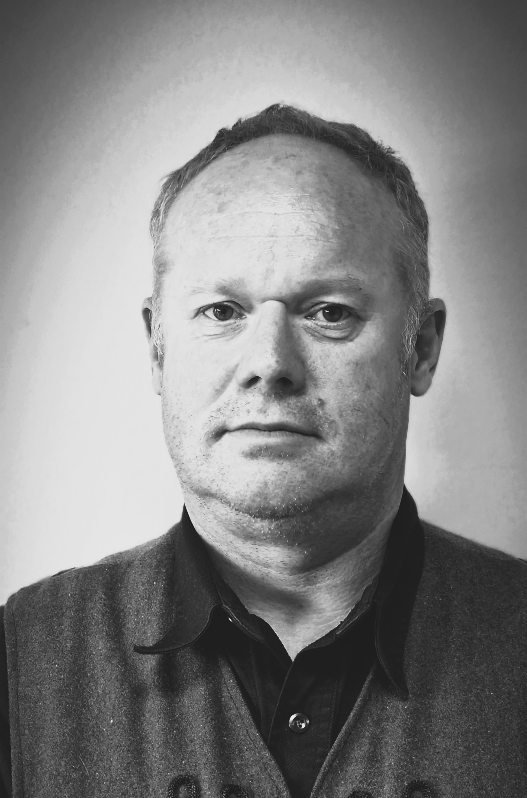
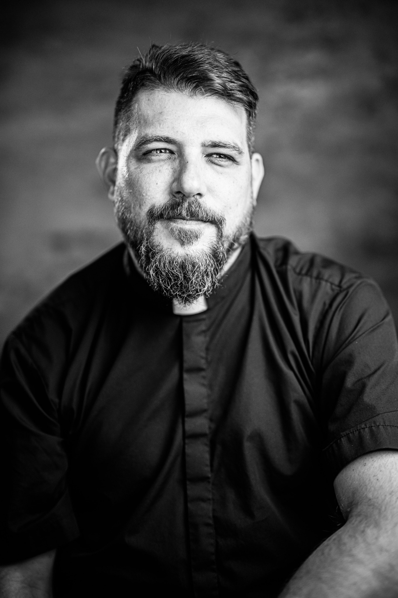
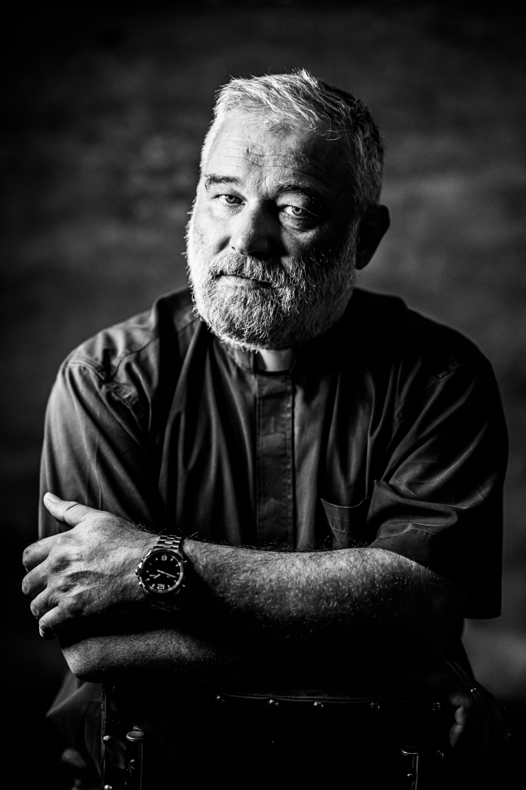
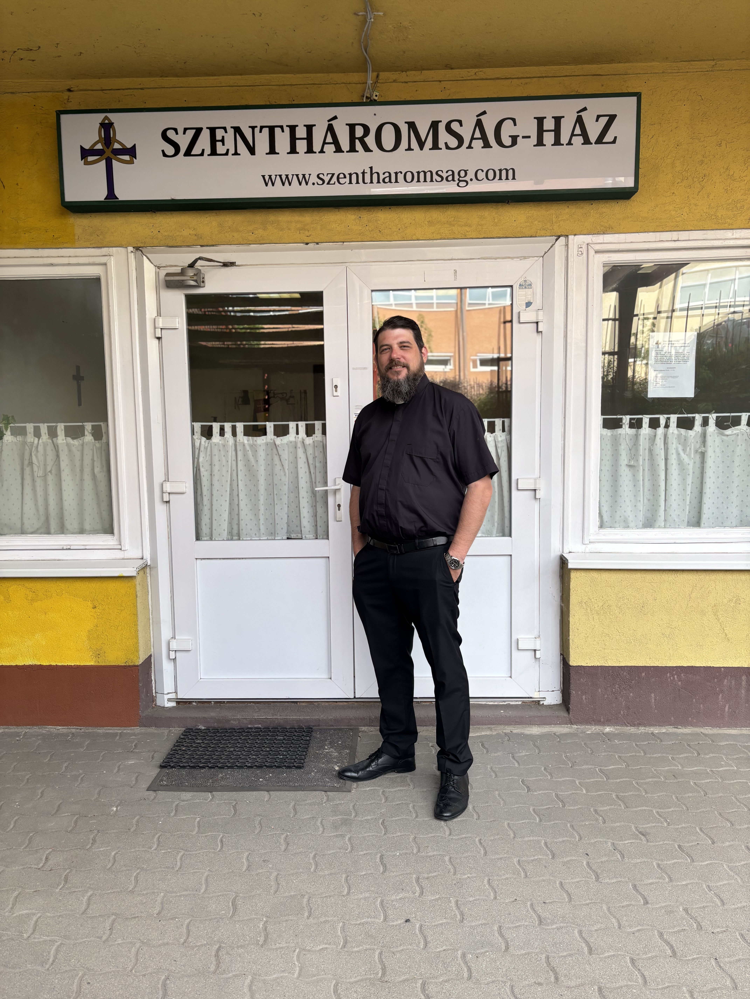
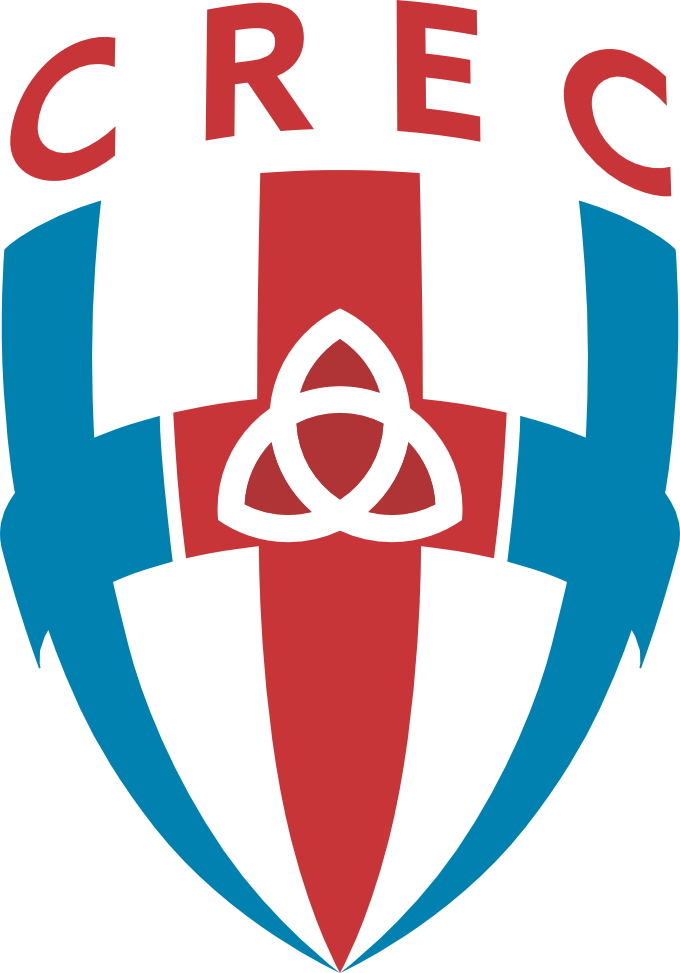

Creation
The Bible tells one grand narrative, the story of a Garden being transformed into the City of God. Thus, we must read each part and detail of the Bible within the context of this one story.
Creation · Culture · Liturgy
The Bible tells one grand narrative, the story of a Garden being transformed into the City of God. Thus, we must read each part and detail of the Bible within the context of this one story.
The Bible story begins with the creation of the world and the calling of Adam to transform the earth according to the pattern of heaven, moving from immature glory to mature glory.
History moves from the glory of the Garden to the glory of the City only after God meets with His people and unites them to Himself and thereby grants them His life and wisdom in Christ Jesus through the Holy Spirit.
At the Trinity Evangelical Church, the following ideas shape the core of our identity:
The Bible tells one story, which can be called, “From Garden to City.” Man’s history begins in the Garden of Eden, the first earthly sanctuary, and progresses through covenants and worship to the New Jerusalem. Thus, the reading of Scripture must always be rooted in the creation story and honor its liturgical flow, tracing typological patterns like trees and temples, bread and wine, revealing God’s plan to glorify creation through Man’s communion with Him.
Man’s original calling was to transform the whole of creation so that it would more and more reflect Heaven’s glory. Sin, which was Man’s rebellion against God, distorted this calling. However, in Christ, this calling was restored. Now, as priest-king, men do their work by cultivating and protecting the Garden; and, as bride-queen, women do their work by adorning and glorifying the Garden. Together, their calling is to fill creation with the glory and knowledge of God. Man, male and female together, images God by re-ordering the world, moving from immature glory to mature glory, so that the earth will one day reflect the heavenly patterns.
The movement from a Garden to the City of God not only points to the flow of history but also emphasizes that enjoying God’s special presence in the Divine Service, which is led by men, shapes culture and Man’s life. During the Divine Service, God restores us to glory, teaches us wisdom, and feeds us, through the Holy Spirit, with the resurrected life of Christ. Thus, all Man’s endeavors—specifically but not exhaustively; art, work, family, education, government —flow from the Divine Service. Christ restores true worship, enabling a mature society where all of life is offered as praise to God, culminating in the perfected and glorious New Jerusalem.
Creation, culture and liturgy are held together in the person and work of the Lord Jesus Christ. Because all of creation was made through Christ (creation) and for Christ (culture), Christ himself is the means (liturgy) by which God will be all in all (Col 1:15-18 and 1Cor 15:28). Therefore, the phrase “All of Christ, for all of life” summarizes all that we are (mission) and all that we do (vision) at the Trinity Evangelical Church.
Every Sunday at 10:00 AM
2049 Diósd, Hunyadi út 8-9.
(Paulus Közösségi Ház)
For children
Sundays between 9:10 and 9:45 AM, prior to the Divine Service.
Fellowship
Held once a month. Please contact us for exact dates.

Ferenc has been a member of the Trinity Evangelical Church in Diósd since 2013. He was ordained as an elder in 2021. He is a leading figure and loyal member of the congregation, serving the church with his exemplary life. He lives in Érd with his wife and four children.

Graduated in History and American Studies (Sociolinguistics) in Szeged, then pursued studies in “Reformed Religious Education” also in Szeged. In 2010, he successfully completed the CREC ordination exam before the Anselm Presbytery and was ordained in November in the CREC congregation in Poznan, Poland. He has lived in Diósd with his wife and five children since 2002.

He was ordained in 2000 and received his doctorate from the Warsaw Academy of Christian Theology. He is president of the Jan Hus Church Presbytery (CREC) and regional coordinator of the Joint Eastern European Common Project. He has a wife and three children.

The Communion of Reformed Evangelical Churches (CREC) has been present in Hungary since 2007. Trinity Evangelical Church existed as a mission until 2013, then operated as a mission church until 2021. After that, it successfully particularized and became a full member church in accordance with the CREC constitution. From a church governance perspective, we are Presbyterians and we are a member of the Jan Hus Presbytery of the CREC,

The CREC exists not as a generic Reformed body, but as a church committed to the integration of rich theology, covenantal life, and cultural obedience. In an age of fragmentation, the CREC offers a cohesive vision: Word-centered, family-integrated, and kingdom-oriented.
The CREC is not simply conservative in doctrine; it is constructive in mission. It does not seek to freeze the Reformation in the 16th century but to carry it forward—faithfully applying the principles of Scripture to every area of life. This means that its distinctives are not arbitrary preferences but carefully articulated convictions that serve the health and mission of the Church.